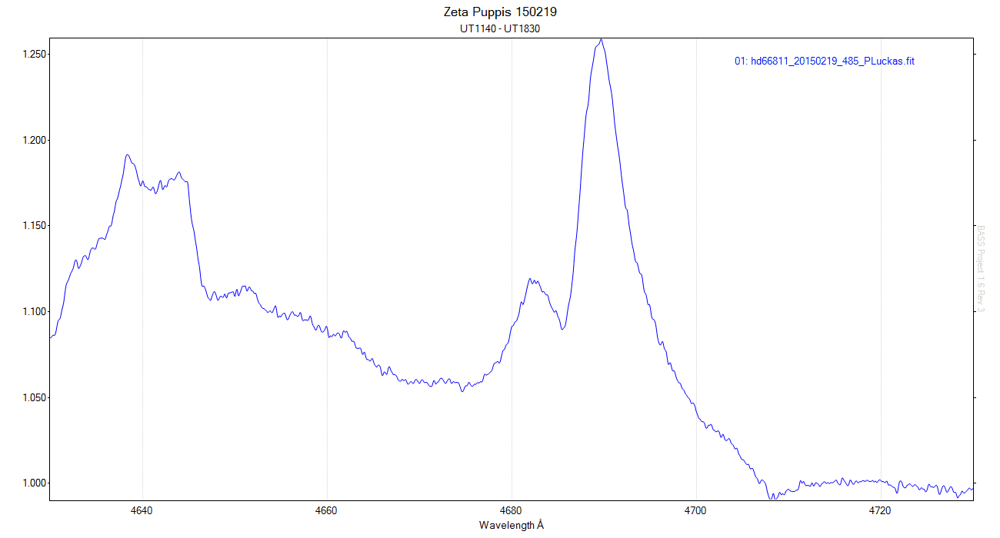
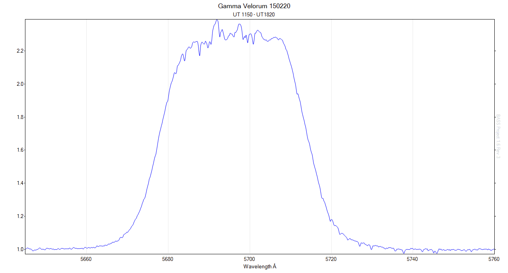
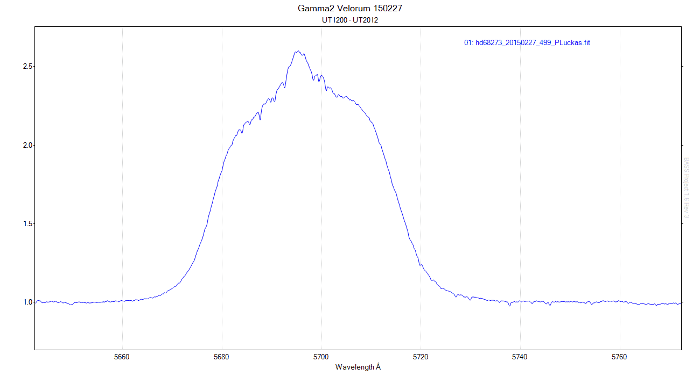
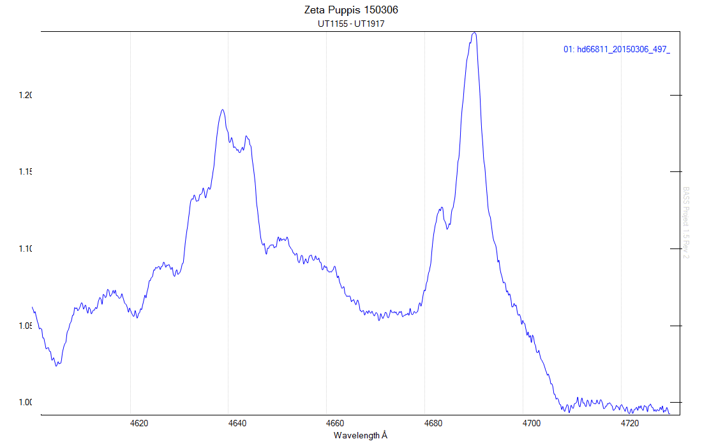
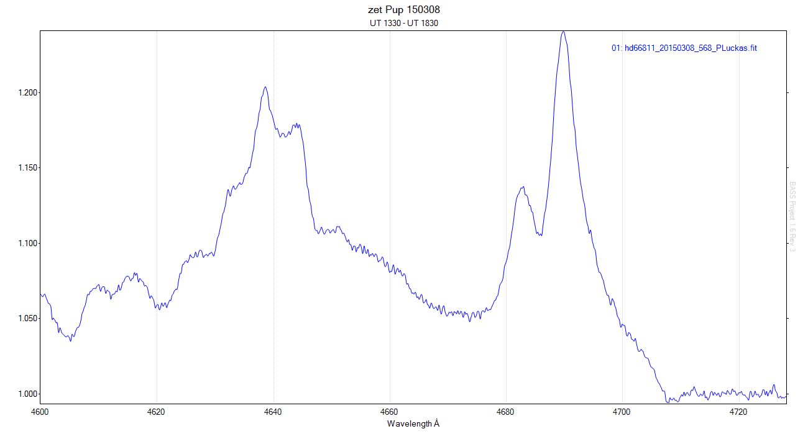

20 spectra of zet Pup taken between UT 1130 and UT 1830 on February 19, 2015. 

19 spectra of gam2 Vel taken between UT 1150 and UT 1820 on February 20, 2015. 

17 spectra of gam2 Vel taken between UT 1200 and UT 2012 on February 27th, 2015. 

23 spectra of zet Pup taken on March 6th, 2015. 

16 Spectra of zet Pup taken on March 8th, 2015. 